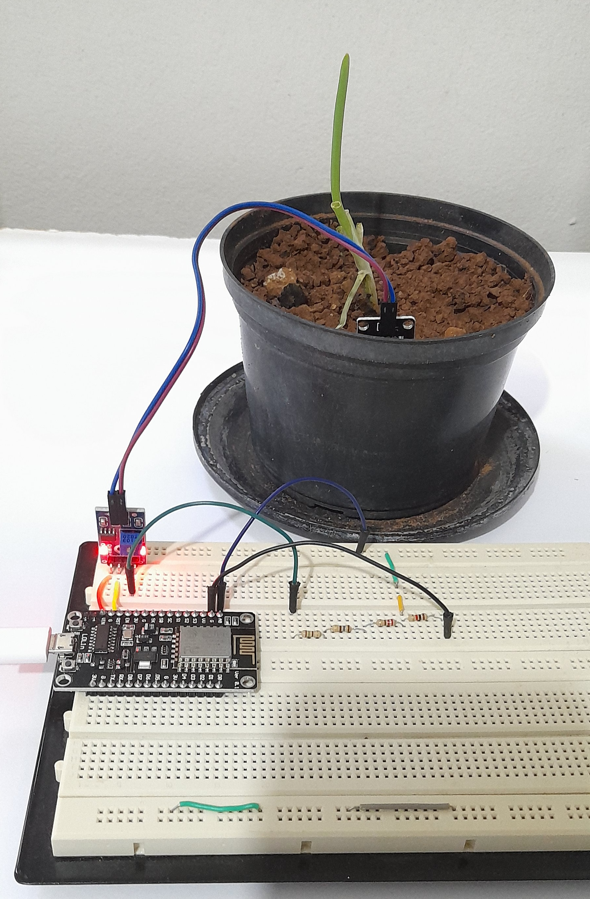

Manual de OperaçãoO sistema é constituído por duas partes: um hardware responsável por medir a umidade do solo e enviar esses dados para a nuvem, e um sistema web que exibe essas informações para o usuário. Para ligar o dispositivo é necessário alimentá-lo com uma tensão de 5 volts, utilizando um conector micro-USB. Alguns parâmetros precisam ser ajustados na programação do hardware, como as informações da rede Wi-Fi e também o intervalo entre as medições. Posteriormente basta colocar as hastes do sensor de umidade no solo onde deseja fazer o monitoramento. Os dados serão exibidos no site, nele é possível ver a medição mais recente, o gráfico com o histórico e também gerar um pdf com o relatório detalhado. Pronto! Após seguir esses passos, você conseguirá fazer o monitoramento da umidade do solo de uma forma bastante simples e prática. |
 |